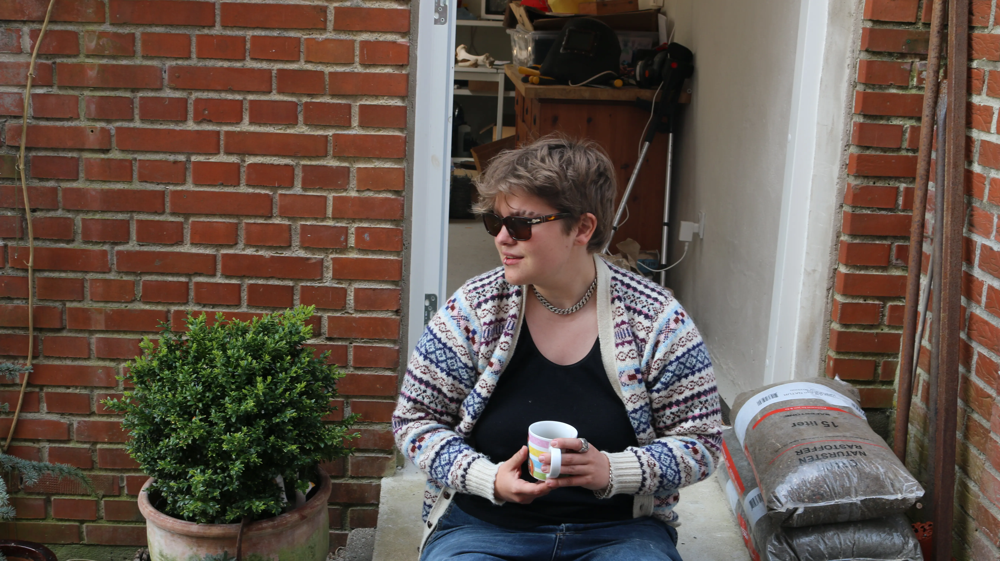

Camilla Pedersen
En passion for kunst der provokerer
Camilla Pedersen er en dansk kunstner fra Fredensborg, der arbejder med forskellige kunstneriske medier. Hendes inspiration kommer fra religiøse fortællinger om det gode og det onde. Hendes kunst er skabt til at få folk til at tænke og føle noget anderledes, og hendes værksted er en oplevelse af farver, former og kreative idéer. Hun udfordrer sig selv og andre gennem sit arbejde, hvilket tydeligt ses i hendes kunst.
